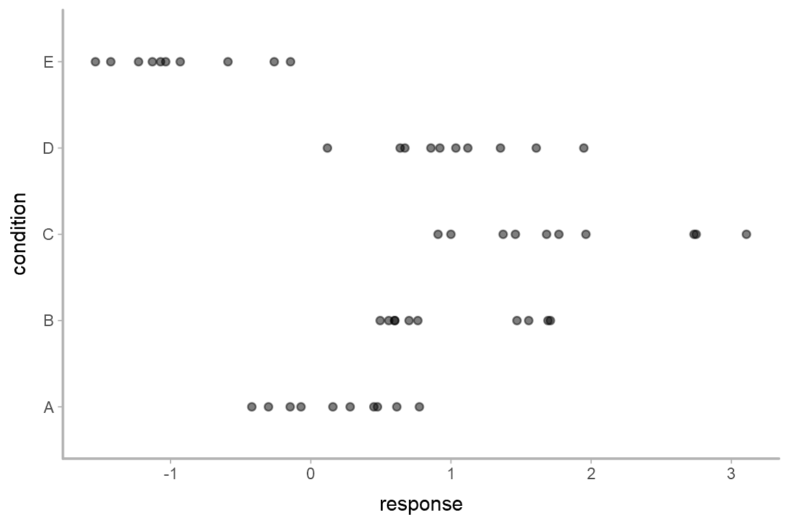
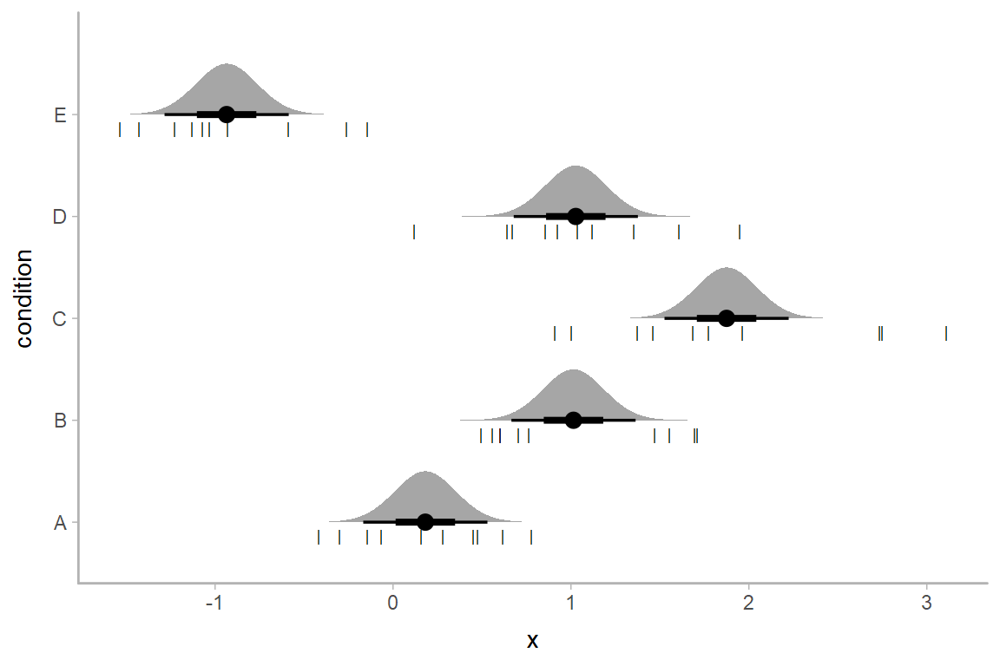
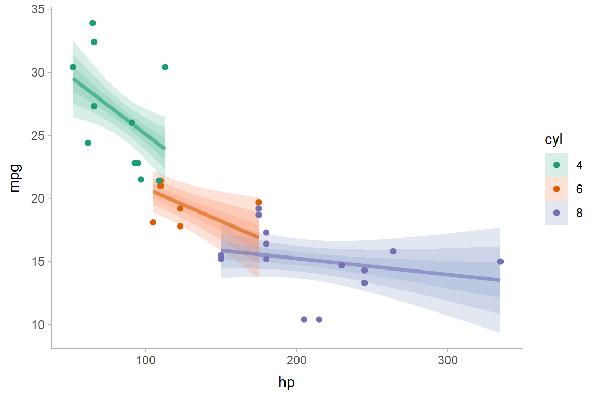

Frequentist uncertainty visualization
Matthew Kay
2019-08-07
Source:vignettes/freq-uncertainty-vis.Rmd
freq-uncertainty-vis.RmdIntroduction
This vignette shows how to combine the tidybayes geoms with output from the broom package to enable visualization of uncertainty from frequentist models. The general idea is to use the stat_dist_... family of ggplot stats to visualize sampling distributions instead of visualizing posterior distributions as we might from a Bayesian model. For more information on that family of stats and geoms, see vignette("slabinterval").
Point estimates
We’ll start with an ordinary least squares (OLS) linear regression analysis of the simple ABC dataset used in vignette("tidybayes"):
set.seed(5)
n = 10
n_condition = 5
ABC =
tibble(
condition = rep(c("A","B","C","D","E"), n),
response = rnorm(n * 5, c(0,1,2,1,-1), 0.5)
)This is a typical tidy format data frame: one observation per row. Graphically:

And a simple linear regression of the data is fit as follows:
The default summary is not great from an uncertainty communication perspective:
##
## Call:
## lm(formula = response ~ condition, data = ABC)
##
## Residuals:
## Min 1Q Median 3Q Max
## -0.9666 -0.4084 -0.1053 0.4104 1.2331
##
## Coefficients:
## Estimate Std. Error t value Pr(>|t|)
## (Intercept) 0.1816 0.1732 1.048 0.30015
## conditionB 0.8326 0.2450 3.399 0.00143 **
## conditionC 1.6930 0.2450 6.910 1.38e-08 ***
## conditionD 0.8456 0.2450 3.452 0.00122 **
## conditionE -1.1168 0.2450 -4.559 3.94e-05 ***
## ---
## Signif. codes: 0 '***' 0.001 '**' 0.01 '*' 0.05 '.' 0.1 ' ' 1
##
## Residual standard error: 0.5478 on 45 degrees of freedom
## Multiple R-squared: 0.7694, Adjusted R-squared: 0.7489
## F-statistic: 37.53 on 4 and 45 DF, p-value: 8.472e-14So let’s try half-eye plots instead. The basic idea is that we need to get the three parameters for the sampling distribution of each parameter and then use stat_dist_halfeyeh() to plot them. The sampling distribution for parameter \(i\), \(\beta_i\), from an lm model is a scaled-and-shifted t distribution:
\[ \beta_i \sim \textrm{student_t}\left(\nu, \hat\beta_i, \sigma_{\beta_i}\right) \]
With:
-
\(\nu\): degrees of freedom, equal to
df.residual(m_ABC) -
\(\hat\beta_i\): location, equal to the point estimate of the parameter (
estimatecolumn frombroom::tidy()) -
\(\sigma_{\beta_i}\): scale, equal to the standard error of the parameter estimate (
std.errorcolumn frombroom::tidy())
We can get the estimates and standard errors easily by using broom::tidy():
## # A tibble: 5 x 5
## term estimate std.error statistic p.value
## <chr> <dbl> <dbl> <dbl> <dbl>
## 1 (Intercept) 0.182 0.173 1.05 0.300
## 2 conditionB 0.833 0.245 3.40 0.00143
## 3 conditionC 1.69 0.245 6.91 0.0000000138
## 4 conditionD 0.846 0.245 3.45 0.00122
## 5 conditionE -1.12 0.245 -4.56 0.0000394Putting everything together, we have:
m_ABC %>%
tidy() %>%
ggplot(aes(y = term)) +
stat_dist_halfeyeh(
aes(dist = "student_t", arg1 = df.residual(m_ABC), arg2 = estimate, arg3 = std.error)
)If we would rather see uncertainty in conditional means, we can instead use modelr::data_grid() along with broom::augment() (similar to how we use modelr::data_grid() with tidybayes::add_fitted_draws() for Bayesian models). Here we want the sampling distribution for the mean in condition \(c\), \(\mu_c\):
\[ \mu_c \sim \textrm{student_t}\left(\nu, \hat\mu_c, \sigma_{\mu_c} \right) \]
With:
-
\(\nu\): degrees of freedom, equal to
df.residual(m_ABC) -
\(\hat\mu_c\): location, equal to the point estimate of the mean in condition \(c\) (
.fittedcolumn frombroom::augment()) -
\(\sigma_{\mu_c}\): scale, equal to the standard error of the mean in condition \(c\) (
.se.fitcolumn frombroom::augment())
Putting everything together, we have:
ABC %>%
data_grid(condition) %>%
augment(m_ABC, newdata = .) %>%
ggplot(aes(y = condition)) +
stat_dist_halfeyeh(
aes(dist = "student_t", arg1 = df.residual(m_ABC), arg2 = .fitted, arg3 = .se.fit),
scale = .5
) +
# we'll add the data back in too (scale = .5 above adjusts the halfeye height so
# that the data fit in as well)
geom_point(aes(x = response), data = ABC, pch = "|", size = 2, position = position_nudge(y = -.15))
Of course, this works with the entire stat_dist_... family. Here are gradient plots instead:
ABC %>%
data_grid(condition) %>%
augment(m_ABC, newdata = .) %>%
ggplot(aes(y = condition)) +
stat_dist_gradientintervalh(
aes(dist = "student_t", arg1 = df.residual(m_ABC), arg2 = .fitted, arg3 = .se.fit),
scale = .5
)
For a fit line
The same principle of reconstructing the sampling distribution allows us to use stat_dist_lineribbon() to construct uncertainty bands around regression fit lines. Here we’ll reconstruct an example with the mtcars dataset from vignette("tidy-brms"), but using lm() instead:
Again we’ll use modelr::data_grid() with broom::tidy(), but now we’ll employ stat_dist_lineribbon():
mtcars %>%
group_by(cyl) %>%
data_grid(hp = seq_range(hp, n = 101)) %>%
augment(m_mpg, newdata = .) %>%
ggplot(aes(x = hp, fill = ordered(cyl), color = ordered(cyl))) +
stat_dist_lineribbon(
aes(dist = "student_t", arg1 = df.residual(m_mpg), arg2 = .fitted, arg3 = .se.fit),
alpha = 1/4
) +
geom_point(aes(y = mpg), data = mtcars) +
scale_fill_brewer(palette = "Set2") +
scale_color_brewer(palette = "Dark2") +
labs(
color = "cyl",
fill = "cyl",
y = "mpg"
)